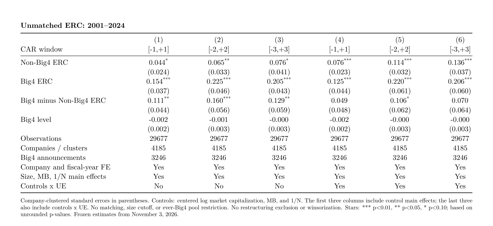
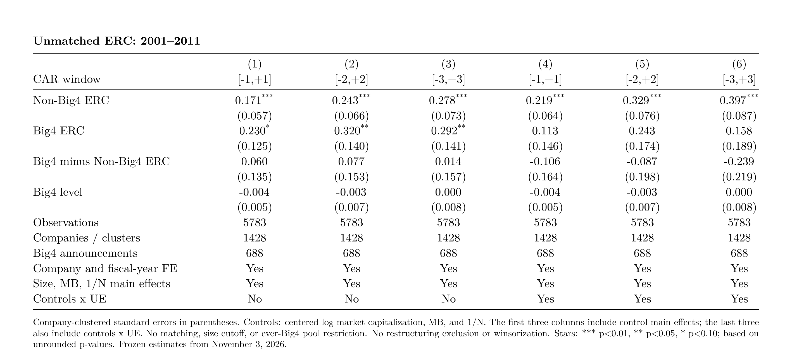
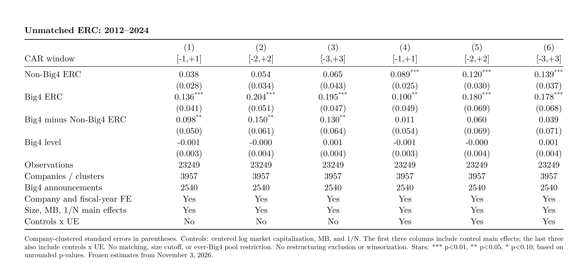
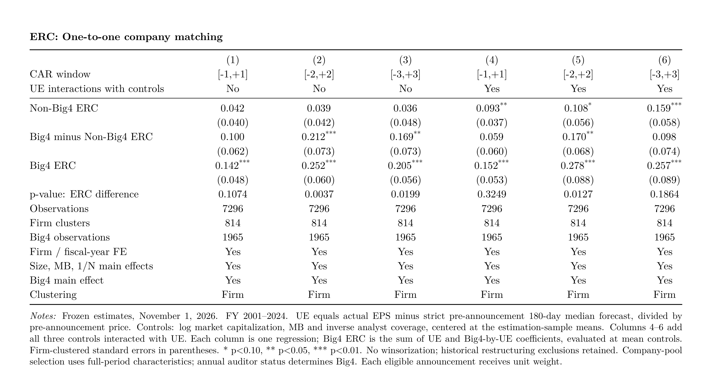
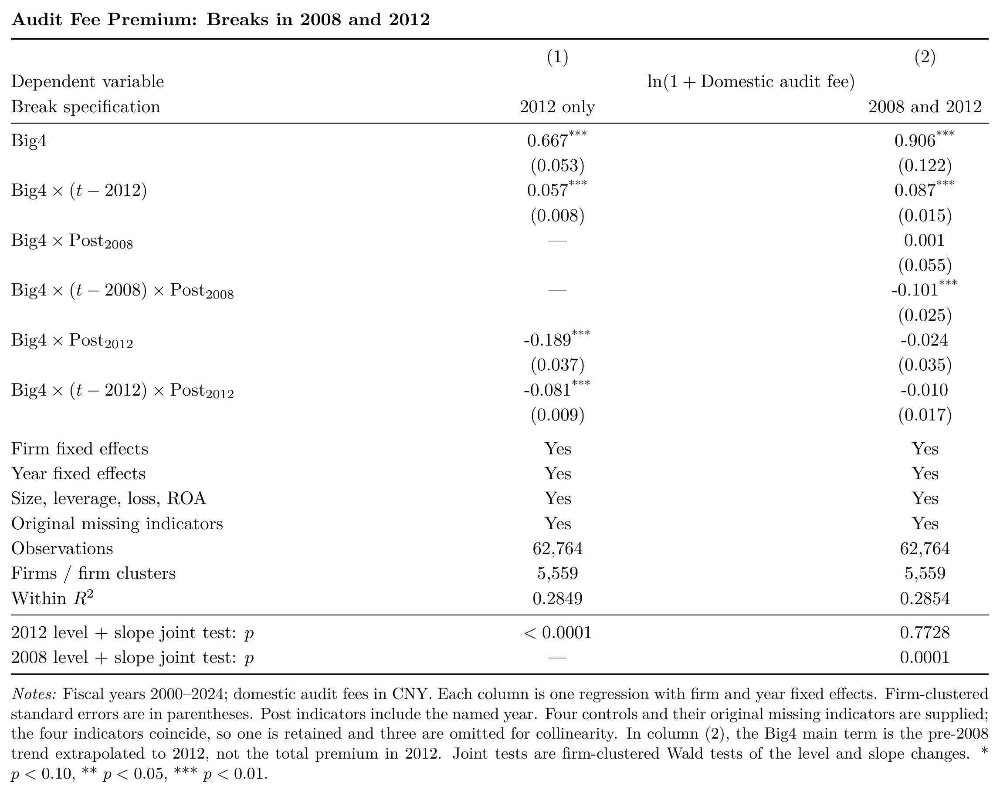
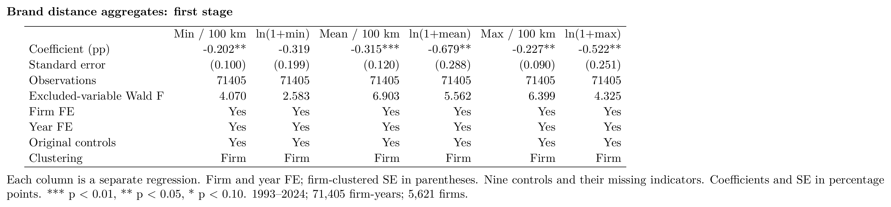
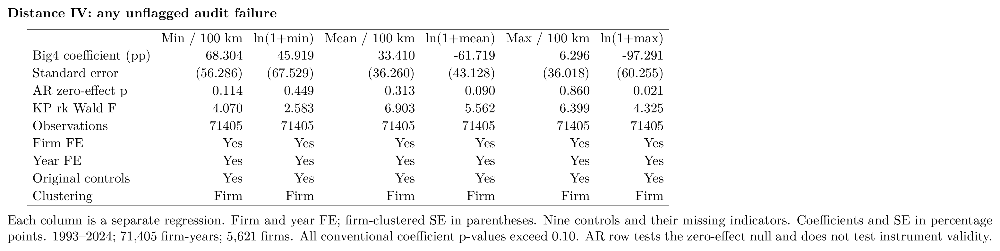
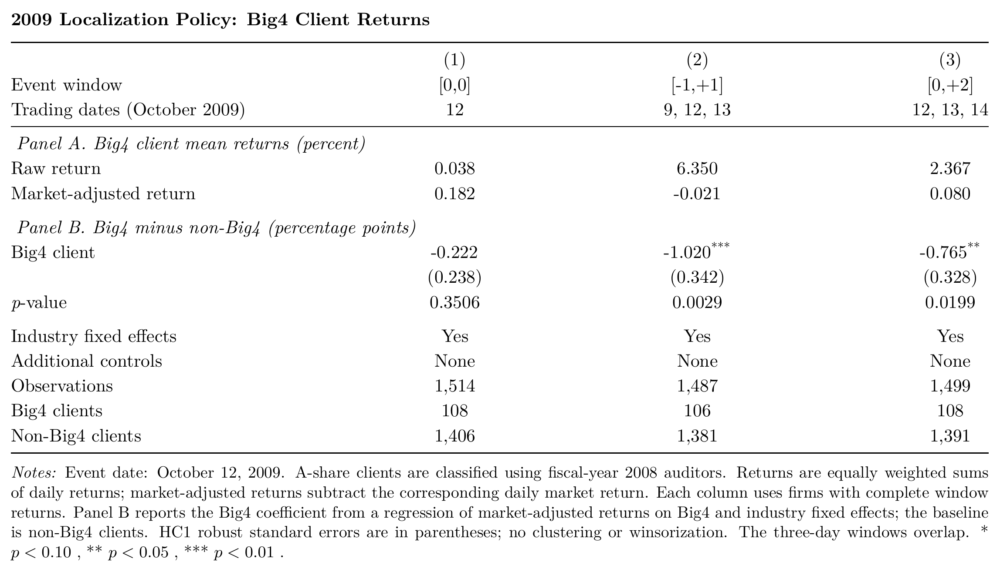
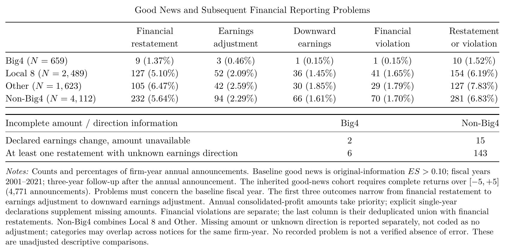
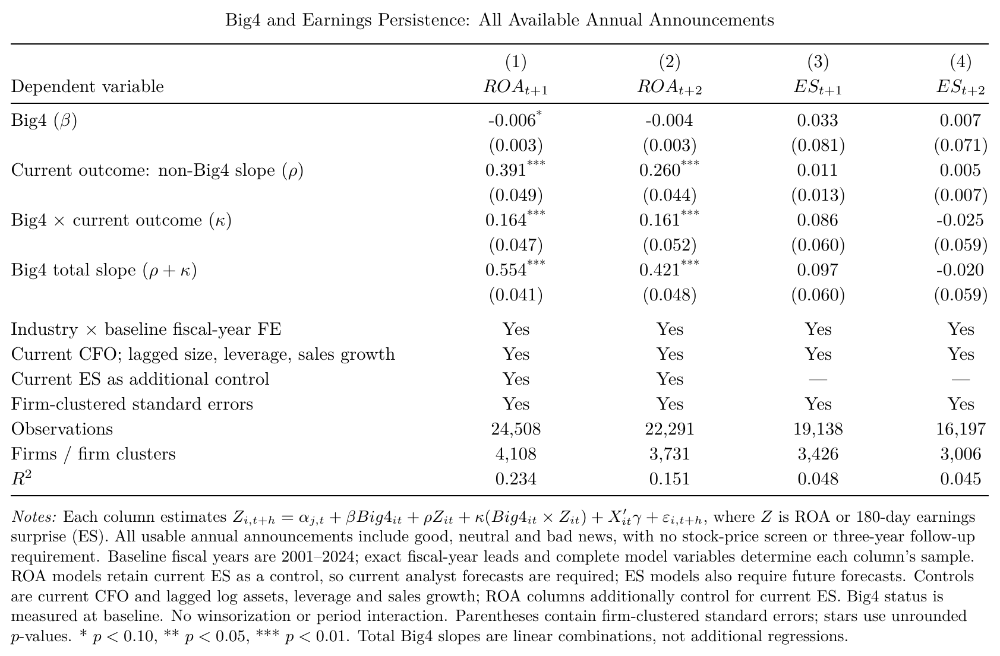

下次会议提纲
本周工作总览与主要修改
盈利惊喜的两种口径。 设\(EPS_{it}\)为实际每股收益，\(F_{it}\)为公告前1—180天内各券商最新预测的中位数，\(P_{pre,it}\)为公告前股价：
\[ ES_{it}=\frac{EPS_{it}-F_{it}}{|F_{it}|}, \qquad UE_{it}=\frac{EPS_{it}-F_{it}}{P_{pre,it}}. \]
两者使用相同的实际盈利与预期之差。ES以预测盈利的绝对值标准化，表示超预期相对于预测盈利的幅度；UE以公告前股价标准化，表示超预期盈利相对于股价的大小。\(F=0\)时ES无法定义，预测接近零时ES容易出现极端值。分组分析中，ES以±10%、UE以±0.001划分坏消息、中性消息和好消息；中性组包含两端边界。两种门槛对应不同的经济尺度，分组成员可能不同。
主要结果
| 主题 | 比较内容 | 主要发现／讨论重点 | 入口 |
|---|---|---|---|
| 完整未匹配样本ERC | 三个CAR窗口、三个时期，比较控制主项与controls×UE | 加入交互后，尚无跨窗口稳定的四大额外ERC优势 | 基准对照 |
| 短窗四种时间FE | A—D模型下2012年前后的组内响应与直接组间差 | 早期额外响应对是否允许分组事件时间路径敏感；组内上涨与组间差分别判断 | 四模型前后对照 |
| UE消息构成与分档响应 | 固定绝对九组与年度共同十分位，分别比较全期及2012前后 | 四大正向UE占比较高；固定幅度下仅早期最小正档有一致额外响应，未见普遍好消息溢价 | 消息构成与分档比较 |
| 三年滚动A—D与三套公司池 | 三套公司池、UE／ES分类；同一窗口内固定样本比较四种时间FE | 共同／分组事件时间路径显著影响额外响应判断；窗口重叠与客户构成限制因果解释 | 滚动对照与三池入口 |
| 早上市曾用四大公司池 | UE／ES好、中、坏消息的分期D模型及历年审计构成 | UE与ES的组间结论存在差异；选定公司池和客户构成影响解释 | UE · ES |
| 旧公司匹配ERC | 1∶1与全邻居两种匹配，分别比较三个CAR窗口 | 全交互后支持集中在中间窗口；全期信息选池及旧重组排除口径单列说明 | 匹配ERC |
| 审计费用 | 原始费用、全样本／留任／换所年度溢价及断点检验 | 区分名义费用、相对溢价和正式断点检验；不只依据曲线判断2012突变 | 收费 |
| Distance／IV | 距离与四大采用的一阶段、审计结果2SLS及提前趋势 | 一阶段强度及排除限制仍有问题，暂未形成可信主IV | 距离探索 |
| 本土化政策与财报事后质量 | 2009年政策事件、好消息后三年财报问题与盈利持续性 | 政策三日相对少涨；四大好消息事后问题较少，ROA持续性较强，ES持续性不显著 | 政策 · 事后验证 |
| 机构持仓与借贷 | 股东结构、简单债务基准、持仓响应及借贷数量／期限 | 持仓仅有局部正向差异，债务没有一致期限改善；含债券结果受小样本限制 | 结构描述 · 三部分结果 |
补充结果与待讨论问题
| 主题 | 比较内容 | 主要发现与待讨论问题 |
|---|---|---|
| 同一早上市曾用四大池的连续ERC | 三个时期×三个CAR窗口×主项／全交互，共18个已估计模型；与当前已展示的该池UE／ES分组图配套 | 18个四大ERC增量均为负且未达10%；不能把该池的分组消息响应写成连续ERC也支持四大优势 |
| UE分布与同档可比性 | 原始分布、CDF及同一UE档内的消息幅度和企业特征 | 分档响应与九组占比见上方；同档内部仍可能有幅度及客户差异，企业匹配需另行核对 |
| 正负UE的ERC与控制交互 | 已有分段ERC、主项／交互对照及两侧差异检验；不同历史输入分别留存 | 部分信号集中在负UE侧，加交互后减弱；一侧显著不能代替正负两侧差异检验，旧样本结果需标注版本 |
| 阈值、聚类及路径限制敏感性 | 已有不同消息门槛、公告／公司聚类、共同／分组时间路径的检验与支持检查 | 当前主图采用固定10%消息口径与公告聚类；其余用于补充敏感性，不能把多种样本和规格混成同一基准 |
| 早期预测覆盖与替代数据／方法 | 已核对逐年合格报告数、早期四大中性组支持，并讨论预测数据库和不依赖分析师的预期基准 | 早期覆盖与参考组较薄；缺覆盖、预测准确性和消息提前披露分别判断。替代预测数据尚未取得，新模型预测尚未构造或估计 |
下次讨论优先聚焦两件事： 一是怎样建立跨时期可比的盈利预期与Big4／non-Big4客户比较；二是长期资金及借贷究竟希望解释持仓持续性、融资数量、期限、成本还是投资配置，再据此确定主分析。已有未采用的探索保留为补充，不自动恢复已停止的长窗任务。
本次准备讨论的问题
本轮先讨论客户特征调整后，四大的短窗口盈利消息响应是否仍有差异，再汇报2012年前后的审计收费、距离IV探索，以及盈利信号后的持仓与债务变化。长期价格drift已停止推进，历史结果仅保留为补充。先展示完整未匹配样本对控制交互与分组时间FE的敏感性，再展示后续选定公司池的短窗及匹配ERC结果；不同人群与历史口径分别解释。距离已完成主要探索，工具强度与提前关联仍限制因果解释。
另补充一项已完成的检验：2009年本土化政策正式发布附近，四大客户是否出现负向价格反应，结果见第5节。机构持仓结构的组间比较见第7节，盈利信号后的持仓与债务变化见第8节。
完整样本的基准对照：ERC与短窗响应为何变弱
完整未匹配样本尚未稳定支持四大有更强的公告期响应。 ERC在加入公司特征×UE后明显变弱；好消息event study允许两组各有事件日基准路径后，早期原有的正向四大增量也不显著。先看这一基准，再看后面的匹配及曾用四大公司池结果。
本节复用11月3日冻结结果：严格公告前1—180天已发布预测、每券商最新预测再取中位数，保留已有原报EPS恢复及原始尾部；不匹配，不作市值top70或N≥4筛选，不限制曾用四大公司或2012年前上市，不剔除重大重组。完整样本仍要求对应价格、预测和控制有效；ERC与日度事件研究各用自身合格样本。各时期内固定模型比较成员，分期重新处理FE单例。
传统ERC。 两版都保留Big4×UE；第二版增加市值、MB、覆盖的UE交互：
\[ CAR^w_{it}=\alpha_i+\lambda_t+\delta B_{it}+\beta U_{it} +\theta B_{it}U_{it}+\gamma'X^c_{it} +q\,\eta'(U_{it}X^c_{it})+\varepsilon_{it},\quad q\in\{0,1\}. \]
\(U=(EPS-F)/P_{pre}\)；\(X^c\)为中心化市值对数、MB和\(1/N\)。公司、财年FE及公司聚类保持一致。关注\(\theta\)，即四大减非四大的ERC斜率差。

全期29,677次公告、4,185家公司。仅主项版三窗四大增量均为正且5%显著；全交互版依次为0.049、0.106、0.070，p值0.305、0.085、0.271，只有[−2,+2]达到10%。2012年前两版三窗均不显著；2012年起仅主项版三窗5%显著、全交互版均不显著。点估计也下降，不能只解释为自由度损失。
展开2012前后ERC对照表


短窗event study。 设\(G=1(ES>10\%)\)，\(ES=(EPS-F)/|F|\)；中性为±10%，排除ES<−10%。统一估计：
\[ \ln P_{e\tau}=\alpha_e+T_m(B_e,\tau,d) +\sum_{k\ne-1}[\beta_{mk}G_e+\theta_{mk}B_eG_e]1(\tau=k)+\varepsilon_{e\tau}. \]
窗口[−5,+5]、−1基期，报告事件FE及报告聚类；无财务或连续ES controls。A为共同事件日＋共同交易日FE；B将事件日FE按审计组区分；C将交易日FE按组区分；D两者都按组区分。\(\theta_{mk}\)直接比较两组各自“好消息减中性消息”的增量，第0日系数是相对价格响应，非CAR[−1,0]。
2012年前四模型同用4,485次公告、49,267条日度观测。第0日四大增量在A／C为0.475／0.408个百分点（p=0.0136／0.0394）；B／D降至0.194／0.221（p=0.424／0.368）。全期D及2012年起D也未检出清楚的四大增量。两组自身可以对好消息上涨，直接增量差仍可能不显著。
2012年前后：四种固定效应的方程与组间差值
下面围绕“四大减非四大的好消息响应增量差”，按固定效应区别列出四个模型，每个模型在方程下连续展示2012年前与2012年起的差值路径。
共同口径。 \(e\)为年报公告，\(\tau\)为相对事件交易日，\(d(e,\tau)\)为实际交易日期；\(B_e=1\)为当年四大客户，\(G_e=1(ES>10\%)\)。中性消息为\(|ES|\leq10\%\)，排除ES<−10%；\(K=\{-5,-4,-3,-2,0,1,2,3,4,5\}\)，第−1日归零。各模型和时期分别估计，均有公告事件FE \(\alpha_e\)，按公告事件聚类，无额外财务控制或连续ES幅度控制。2012年前四模型同用4,485次公告、49,267条日度观测、1,693家公司；2012年起同用15,830次公告、174,046条日度观测、4,108家公司。两时期成员可以不同。
方程中的\(\beta^m_{0k}\)、\(\beta^m_{1k}\)分别是非四大、四大“好消息减自身中性消息”的响应。图展示直接差值\((\beta^m_{1k}-\beta^m_{0k})\times100\)及95%区间；两组自身路径保留在各模型下方的展开区。A→B、C→D放开两组事件时间基准路径；A→C、B→D放开两组实际交易日冲击。各期差值与显著性不能代替正式前后系数差检验。
A｜共同事件时间FE＋共同交易日FE
\[ \begin{aligned} \ln P_{e\tau}&=\alpha_e+\lambda_{\tau}+\mu_{d(e,\tau)}\\ &\quad+\sum_{k\in K}\left[\beta^{A}_{0k}(1-B_e)+\beta^{A}_{1k}B_e\right]G_e\,1(\tau=k)+\varepsilon^{A}_{e\tau}. \end{aligned} \]


展开A模型：两时期四大和非四大各自的响应


B｜审计组×事件时间FE＋共同交易日FE
\[ \begin{aligned} \ln P_{e\tau}&=\alpha_e+\lambda_{B_e,\tau}+\mu_{d(e,\tau)}\\ &\quad+\sum_{k\in K}\left[\beta^{B}_{0k}(1-B_e)+\beta^{B}_{1k}B_e\right]G_e\,1(\tau=k)+\varepsilon^{B}_{e\tau}. \end{aligned} \]


展开B模型：两时期四大和非四大各自的响应


C｜共同事件时间FE＋审计组×交易日FE
\[ \begin{aligned} \ln P_{e\tau}&=\alpha_e+\lambda_{\tau}+\mu_{B_e,d(e,\tau)}\\ &\quad+\sum_{k\in K}\left[\beta^{C}_{0k}(1-B_e)+\beta^{C}_{1k}B_e\right]G_e\,1(\tau=k)+\varepsilon^{C}_{e\tau}. \end{aligned} \]


展开C模型：两时期四大和非四大各自的响应


D｜审计组×事件时间FE＋审计组×交易日FE
\[ \begin{aligned} \ln P_{e\tau}&=\alpha_e+\lambda_{B_e,\tau}+\mu_{B_e,d(e,\tau)}\\ &\quad+\sum_{k\in K}\left[\beta^{D}_{0k}(1-B_e)+\beta^{D}_{1k}B_e\right]G_e\,1(\tau=k)+\varepsilon^{D}_{e\tau}. \end{aligned} \]


展开D模型：两时期四大和非四大各自的响应


补充：全期D模型的组间差值

完整样本正文：三个时期ERC、四FE对照及两组路径。后续的匹配和曾用四大公司池属于不同人群或历史输入，不能代替这里的完整样本结果，也不能据分期显著性判断正式前后差异。当前应面对的问题是：四大身份带来的额外响应与客户特征、信息环境及中性基准路径尚未清楚分离。
UE消息分档：构成差异与同档市场响应
问题与样本。 将好消息进一步按UE幅度分档，比较相近盈利消息对应的四大与非四大市场响应。样本为全部合格预测公告，不限上市时间或曾用四大；严格公告前180天预测，保留原始UE及负消息，不缩尾、不排重组、不匹配，按财报所属年度的实际审计师分组。每期A—D使用同一实际公告—交易日成员；前后两期不要求为同一批公司。这是消息分档比较，企业特征与同档内部的消息幅度仍可能不同。
两种分档。 固定绝对九组使用UE切点±0.001、±0.0025、±0.005、±0.01，即±0.10%、±0.25%、±0.50%、±1.00%。G5为\([-0.001,0.001]\)近零参考，模型中记为\(c=0\)；正向G6—G9依次为\((0.10\%,0.25\%]\)、\((0.25\%,0.50\%]\)、\((0.50\%,1.00\%]\)及\(>1.00\%\)。负切点相等值归较高档，正切点相等值归较低档，近零两端均包含。
年度共同十分位先在每年将两审计组合在一起排序，沿用共同十分位，再将\(|UE|\le0.001\)的公告单列为近零参考，保留其余1—10档。不同年份的同一档不代表相同绝对幅度；两个审计组共用分位界限。
回归与读图。 \(e\)为年报公告，\(\tau\)为相对交易日，\(d(e,\tau)\)为实际日期，\(B_e\)为年度四大身份，\(C_e\)为消息档，\(K=\{-5,-4,-3,-2,0,1,2,3,4,5\}\)。因变量为日度收盘价的对数，窗口\([-5,+5]\)、第−1日为基期；各方法、时期及模型分别估计，均含公告事件固定效应，标准误按公告事件聚类，无财务控制或连续UE幅度控制。图示第0日响应乘100及95%区间，近似百分点，不是累计CAR。
| 时期 | 公告数／聚类数 | 日度观测N |
|---|---|---|
| 2001—2024 | 30,098 | 330,930 |
| 2001—2011 | 6,237 | 68,532 |
| 2012—2024 | 23,861 | 262,398 |
A／C约束两组共用近零消息的事件时间路径；B／D允许各组相对自身近零路径。直接组差为\(\theta_{1c0}-\theta_{0c0}\)，使用同一回归的协方差计算；一组显著不代表组差显著。
固定九组的公告占比
消息构成。 两期四大财报都更多落在正向UE档，较大正向档尤其明显。UE>0.10%的比例在早期为四大48.46%、非四大37.15%，后期为42.80%、25.95%；两组均下降，非四大下降更多。全期UE>1%的占比分别为16.06%和7.43%。因此，粗分好／中／坏消息之后，组内仍可能包含幅度构成差异。
每张图的分母分别为该时期、该审计组的公告总数，每种颜色九档合计100%；纵轴是报告占比。G5灰虚线标示近零参考。全期四大／非四大为3,251／26,847份，早期681／5,556份，后期2,570／21,291份。图描述消息分布，不含市场响应或显著性检验。


固定绝对幅度下的响应。 全期及2012年起，四个正向档在A—D的直接组差均未达5%。早期只有G6（UE在0.10%至0.25%）的正向差在四模型均达5%，p值依次为0.016353、0.030768、0.032414、0.020147；D模型差值为0.950个百分点（SE=0.409）。其余正向档组差未达5%；后期G6为负且不显著。D后期负向G1、G3的直接差逐点p约0.0385、0.0212。局部差异没有形成普遍的四大好消息溢价，逐点检验未作多重比较校正。
年度共同十分位下的响应。 2012年起，B／D的各档组差联合检验达到5%，表示部分档位存在整体差异，方向需要逐档读图；它不等于四大得到更多正向奖励。年度分位的档位含义随年份变化，不能直接与固定绝对档位混用。
第0日所有非参考档的直接组差联合为零：p值。
| 分档方法／时期 | A | B | C | D |
|---|---|---|---|---|
| 固定绝对九组／全期（2001—2024） | 0.335205 | 0.346401 | 0.435934 | 0.394416 |
| 固定绝对九组／2012年前（2001—2011） | 0.111578 | 0.417711 | 0.437045 | 0.468837 |
| 固定绝对九组／2012年起（2012—2024） | 0.682237 | 0.406713 | 0.673153 | 0.432461 |
| 年度共同十分位／全期（2001—2024） | 0.165094 | 0.125010 | 0.071745 | 0.053642 |
| 年度共同十分位／2012年前（2001—2011） | 0.071708 | 0.225395 | 0.195642 | 0.188638 |
| 年度共同十分位／2012年起（2012—2024） | 0.092548 | 0.038899 | 0.060804 | 0.029345 |
年度十分位的早期事前组差联合检验四模型均p<0.001；固定九组早期A／B／C／D分别为0.057572／0.206092／0.060643／0.232241，5%未拒绝仍不能证明平行趋势。以上为分期估计，本节没有正式2012前后系数差检验。
分档响应完整结果工作簿：六组A—D并列表、各档系数、联合检验及支持数
各时期完整图。 两种方法分别列出全期、2012年前和2012年起的四模型；每个模型先给出方程，再独立展示两组响应与直接组差。
固定绝对九组｜全期（2001—2024）：A—D模型与组间差
固定绝对九组｜全期（2001—2024）
A｜共同事件时间FE＋共同交易日FE
\[ \begin{aligned} \ln P_{e\tau}&=\alpha_e+\lambda^{A}_{\tau}+\mu^{A}_{d(e,\tau)}\\ &+\sum_{g\in\{0,1\}}\sum_{c\ne0}\sum_{k\in K}\theta^{A}_{gck}\,1(B_e=g,C_e=c,\tau=k)\\ &+\varepsilon^{A}_{e\tau}. \end{aligned} \]
基准： 共同近零事件时间路径约束下的响应。


B｜审计组×事件时间FE＋共同交易日FE
\[ \begin{aligned} \ln P_{e\tau}&=\alpha_e+\lambda^{B}_{B_e,\tau}+\mu^{B}_{d(e,\tau)}\\ &+\sum_{g\in\{0,1\}}\sum_{c\ne0}\sum_{k\in K}\theta^{B}_{gck}\,1(B_e=g,C_e=c,\tau=k)\\ &+\varepsilon^{B}_{e\tau}. \end{aligned} \]
基准： 各审计组相对自身近零消息的响应。


C｜共同事件时间FE＋审计组×交易日FE
\[ \begin{aligned} \ln P_{e\tau}&=\alpha_e+\lambda^{C}_{\tau}+\mu^{C}_{B_e,d(e,\tau)}\\ &+\sum_{g\in\{0,1\}}\sum_{c\ne0}\sum_{k\in K}\theta^{C}_{gck}\,1(B_e=g,C_e=c,\tau=k)\\ &+\varepsilon^{C}_{e\tau}. \end{aligned} \]
基准： 共同近零事件时间路径约束下的响应。


D｜审计组×事件时间FE＋审计组×交易日FE
\[ \begin{aligned} \ln P_{e\tau}&=\alpha_e+\lambda^{D}_{B_e,\tau}+\mu^{D}_{B_e,d(e,\tau)}\\ &+\sum_{g\in\{0,1\}}\sum_{c\ne0}\sum_{k\in K}\theta^{D}_{gck}\,1(B_e=g,C_e=c,\tau=k)\\ &+\varepsilon^{D}_{e\tau}. \end{aligned} \]
基准： 各审计组相对自身近零消息的响应。


固定绝对九组｜2012年前（2001—2011）：A—D模型与组间差
固定绝对九组｜2012年前（2001—2011）
A｜共同事件时间FE＋共同交易日FE
\[ \begin{aligned} \ln P_{e\tau}&=\alpha_e+\lambda^{A}_{\tau}+\mu^{A}_{d(e,\tau)}\\ &+\sum_{g\in\{0,1\}}\sum_{c\ne0}\sum_{k\in K}\theta^{A}_{gck}\,1(B_e=g,C_e=c,\tau=k)\\ &+\varepsilon^{A}_{e\tau}. \end{aligned} \]
基准： 共同近零事件时间路径约束下的响应。


B｜审计组×事件时间FE＋共同交易日FE
\[ \begin{aligned} \ln P_{e\tau}&=\alpha_e+\lambda^{B}_{B_e,\tau}+\mu^{B}_{d(e,\tau)}\\ &+\sum_{g\in\{0,1\}}\sum_{c\ne0}\sum_{k\in K}\theta^{B}_{gck}\,1(B_e=g,C_e=c,\tau=k)\\ &+\varepsilon^{B}_{e\tau}. \end{aligned} \]
基准： 各审计组相对自身近零消息的响应。


C｜共同事件时间FE＋审计组×交易日FE
\[ \begin{aligned} \ln P_{e\tau}&=\alpha_e+\lambda^{C}_{\tau}+\mu^{C}_{B_e,d(e,\tau)}\\ &+\sum_{g\in\{0,1\}}\sum_{c\ne0}\sum_{k\in K}\theta^{C}_{gck}\,1(B_e=g,C_e=c,\tau=k)\\ &+\varepsilon^{C}_{e\tau}. \end{aligned} \]
基准： 共同近零事件时间路径约束下的响应。


D｜审计组×事件时间FE＋审计组×交易日FE
\[ \begin{aligned} \ln P_{e\tau}&=\alpha_e+\lambda^{D}_{B_e,\tau}+\mu^{D}_{B_e,d(e,\tau)}\\ &+\sum_{g\in\{0,1\}}\sum_{c\ne0}\sum_{k\in K}\theta^{D}_{gck}\,1(B_e=g,C_e=c,\tau=k)\\ &+\varepsilon^{D}_{e\tau}. \end{aligned} \]
基准： 各审计组相对自身近零消息的响应。


固定绝对九组｜2012年起（2012—2024）：A—D模型与组间差
固定绝对九组｜2012年起（2012—2024）
A｜共同事件时间FE＋共同交易日FE
\[ \begin{aligned} \ln P_{e\tau}&=\alpha_e+\lambda^{A}_{\tau}+\mu^{A}_{d(e,\tau)}\\ &+\sum_{g\in\{0,1\}}\sum_{c\ne0}\sum_{k\in K}\theta^{A}_{gck}\,1(B_e=g,C_e=c,\tau=k)\\ &+\varepsilon^{A}_{e\tau}. \end{aligned} \]
基准： 共同近零事件时间路径约束下的响应。


B｜审计组×事件时间FE＋共同交易日FE
\[ \begin{aligned} \ln P_{e\tau}&=\alpha_e+\lambda^{B}_{B_e,\tau}+\mu^{B}_{d(e,\tau)}\\ &+\sum_{g\in\{0,1\}}\sum_{c\ne0}\sum_{k\in K}\theta^{B}_{gck}\,1(B_e=g,C_e=c,\tau=k)\\ &+\varepsilon^{B}_{e\tau}. \end{aligned} \]
基准： 各审计组相对自身近零消息的响应。


C｜共同事件时间FE＋审计组×交易日FE
\[ \begin{aligned} \ln P_{e\tau}&=\alpha_e+\lambda^{C}_{\tau}+\mu^{C}_{B_e,d(e,\tau)}\\ &+\sum_{g\in\{0,1\}}\sum_{c\ne0}\sum_{k\in K}\theta^{C}_{gck}\,1(B_e=g,C_e=c,\tau=k)\\ &+\varepsilon^{C}_{e\tau}. \end{aligned} \]
基准： 共同近零事件时间路径约束下的响应。


D｜审计组×事件时间FE＋审计组×交易日FE
\[ \begin{aligned} \ln P_{e\tau}&=\alpha_e+\lambda^{D}_{B_e,\tau}+\mu^{D}_{B_e,d(e,\tau)}\\ &+\sum_{g\in\{0,1\}}\sum_{c\ne0}\sum_{k\in K}\theta^{D}_{gck}\,1(B_e=g,C_e=c,\tau=k)\\ &+\varepsilon^{D}_{e\tau}. \end{aligned} \]
基准： 各审计组相对自身近零消息的响应。


年度共同十分位｜全期（2001—2024）：A—D模型与组间差
年度共同十分位｜全期（2001—2024）
A｜共同事件时间FE＋共同交易日FE
\[ \begin{aligned} \ln P_{e\tau}&=\alpha_e+\lambda^{A}_{\tau}+\mu^{A}_{d(e,\tau)}\\ &+\sum_{g\in\{0,1\}}\sum_{c\ne0}\sum_{k\in K}\theta^{A}_{gck}\,1(B_e=g,C_e=c,\tau=k)\\ &+\varepsilon^{A}_{e\tau}. \end{aligned} \]
基准： 共同近零事件时间路径约束下的响应。


B｜审计组×事件时间FE＋共同交易日FE
\[ \begin{aligned} \ln P_{e\tau}&=\alpha_e+\lambda^{B}_{B_e,\tau}+\mu^{B}_{d(e,\tau)}\\ &+\sum_{g\in\{0,1\}}\sum_{c\ne0}\sum_{k\in K}\theta^{B}_{gck}\,1(B_e=g,C_e=c,\tau=k)\\ &+\varepsilon^{B}_{e\tau}. \end{aligned} \]
基准： 各审计组相对自身近零消息的响应。


C｜共同事件时间FE＋审计组×交易日FE
\[ \begin{aligned} \ln P_{e\tau}&=\alpha_e+\lambda^{C}_{\tau}+\mu^{C}_{B_e,d(e,\tau)}\\ &+\sum_{g\in\{0,1\}}\sum_{c\ne0}\sum_{k\in K}\theta^{C}_{gck}\,1(B_e=g,C_e=c,\tau=k)\\ &+\varepsilon^{C}_{e\tau}. \end{aligned} \]
基准： 共同近零事件时间路径约束下的响应。


D｜审计组×事件时间FE＋审计组×交易日FE
\[ \begin{aligned} \ln P_{e\tau}&=\alpha_e+\lambda^{D}_{B_e,\tau}+\mu^{D}_{B_e,d(e,\tau)}\\ &+\sum_{g\in\{0,1\}}\sum_{c\ne0}\sum_{k\in K}\theta^{D}_{gck}\,1(B_e=g,C_e=c,\tau=k)\\ &+\varepsilon^{D}_{e\tau}. \end{aligned} \]
基准： 各审计组相对自身近零消息的响应。


年度共同十分位｜2012年前（2001—2011）：A—D模型与组间差
年度共同十分位｜2012年前（2001—2011）
A｜共同事件时间FE＋共同交易日FE
\[ \begin{aligned} \ln P_{e\tau}&=\alpha_e+\lambda^{A}_{\tau}+\mu^{A}_{d(e,\tau)}\\ &+\sum_{g\in\{0,1\}}\sum_{c\ne0}\sum_{k\in K}\theta^{A}_{gck}\,1(B_e=g,C_e=c,\tau=k)\\ &+\varepsilon^{A}_{e\tau}. \end{aligned} \]
基准： 共同近零事件时间路径约束下的响应。


B｜审计组×事件时间FE＋共同交易日FE
\[ \begin{aligned} \ln P_{e\tau}&=\alpha_e+\lambda^{B}_{B_e,\tau}+\mu^{B}_{d(e,\tau)}\\ &+\sum_{g\in\{0,1\}}\sum_{c\ne0}\sum_{k\in K}\theta^{B}_{gck}\,1(B_e=g,C_e=c,\tau=k)\\ &+\varepsilon^{B}_{e\tau}. \end{aligned} \]
基准： 各审计组相对自身近零消息的响应。


C｜共同事件时间FE＋审计组×交易日FE
\[ \begin{aligned} \ln P_{e\tau}&=\alpha_e+\lambda^{C}_{\tau}+\mu^{C}_{B_e,d(e,\tau)}\\ &+\sum_{g\in\{0,1\}}\sum_{c\ne0}\sum_{k\in K}\theta^{C}_{gck}\,1(B_e=g,C_e=c,\tau=k)\\ &+\varepsilon^{C}_{e\tau}. \end{aligned} \]
基准： 共同近零事件时间路径约束下的响应。


D｜审计组×事件时间FE＋审计组×交易日FE
\[ \begin{aligned} \ln P_{e\tau}&=\alpha_e+\lambda^{D}_{B_e,\tau}+\mu^{D}_{B_e,d(e,\tau)}\\ &+\sum_{g\in\{0,1\}}\sum_{c\ne0}\sum_{k\in K}\theta^{D}_{gck}\,1(B_e=g,C_e=c,\tau=k)\\ &+\varepsilon^{D}_{e\tau}. \end{aligned} \]
基准： 各审计组相对自身近零消息的响应。


年度共同十分位｜2012年起（2012—2024）：A—D模型与组间差
年度共同十分位｜2012年起（2012—2024）
A｜共同事件时间FE＋共同交易日FE
\[ \begin{aligned} \ln P_{e\tau}&=\alpha_e+\lambda^{A}_{\tau}+\mu^{A}_{d(e,\tau)}\\ &+\sum_{g\in\{0,1\}}\sum_{c\ne0}\sum_{k\in K}\theta^{A}_{gck}\,1(B_e=g,C_e=c,\tau=k)\\ &+\varepsilon^{A}_{e\tau}. \end{aligned} \]
基准： 共同近零事件时间路径约束下的响应。


B｜审计组×事件时间FE＋共同交易日FE
\[ \begin{aligned} \ln P_{e\tau}&=\alpha_e+\lambda^{B}_{B_e,\tau}+\mu^{B}_{d(e,\tau)}\\ &+\sum_{g\in\{0,1\}}\sum_{c\ne0}\sum_{k\in K}\theta^{B}_{gck}\,1(B_e=g,C_e=c,\tau=k)\\ &+\varepsilon^{B}_{e\tau}. \end{aligned} \]
基准： 各审计组相对自身近零消息的响应。


C｜共同事件时间FE＋审计组×交易日FE
\[ \begin{aligned} \ln P_{e\tau}&=\alpha_e+\lambda^{C}_{\tau}+\mu^{C}_{B_e,d(e,\tau)}\\ &+\sum_{g\in\{0,1\}}\sum_{c\ne0}\sum_{k\in K}\theta^{C}_{gck}\,1(B_e=g,C_e=c,\tau=k)\\ &+\varepsilon^{C}_{e\tau}. \end{aligned} \]
基准： 共同近零事件时间路径约束下的响应。


D｜审计组×事件时间FE＋审计组×交易日FE
\[ \begin{aligned} \ln P_{e\tau}&=\alpha_e+\lambda^{D}_{B_e,\tau}+\mu^{D}_{B_e,d(e,\tau)}\\ &+\sum_{g\in\{0,1\}}\sum_{c\ne0}\sum_{k\in K}\theta^{D}_{gck}\,1(B_e=g,C_e=c,\tau=k)\\ &+\varepsilon^{D}_{e\tau}. \end{aligned} \]
基准： 各审计组相对自身近零消息的响应。


三年滚动A—D：公司池、预期口径与FE的对照
本批规模与比较单位。 三套公司池×UE／ES×22个三年窗口×四模型，共528组估计，其中396个A／B／C为本次新增，132个D直接复用。共有96张独立图；每张图是22个窗口的第0日系数路径，不是96个单独回归。每个中心年\(w=2002,\ldots,2023\)使用财年\([w-1,w+1]\)，例如中心2010对应2009—2011，中心2012对应2011—2013。
消息与样本。 \(UE=(EPS-F)/P_{pre}\)，以±0.001划分好／中／坏消息；\(ES=(EPS-F)/|F|\)，门槛为±0.10。保留两端消息，等于门槛归中间组；F=0不能定义ES。沿用严格公告前180天预测、不剔除重组、不匹配、报告财年实际审计身份及原始尾部。对每个“公司池×消息口径×中心年”，A／B／C逐行固定原D的实际公告—交易日样本；不同窗口、不同公司池不取统一交集。“曾用四大”依据2001—2024年完整审计历史定义；早上市／曾用四大属于描述性选池，含全期身份信息，不构成外生处理。
共同估计设定。 Y为公告附近\([-5,+5]\)交易日的原始收盘价log，第−1日为基期。\(e\)为公告、\(\tau\)为相对事件日、\(d(e,\tau)\)为真实交易日期，\(B_e\)为当年四大身份；\(C_e\in\{b,n,g\}\)为坏／中／好消息，\(K=\{-5,-4,-3,-2,0,1,2,3,4,5\}\)。每个窗口、消息口径与模型分别回归，均有公告事件FE，按公告事件聚类；无财务controls或连续surprise幅度控制。
方程中\(\beta_{sk,w}^m\)与\(\beta_{sk,w}^m+\delta_{sk,w}^m\)分别对应两组模型响应，直接组间差为\(\delta_{sk,w}^m\)。图只提取\(k=0\)并乘100，展示点估计及报告聚类95%区间，完整动态估计保留在结果包。A／C将两组的中间消息事件时间路径约束为共同路径；B／D允许分组路径，才对应不受此限制的各组“消息减自身中间组”响应。 A→B、C→D改变事件时间FE；A→C、B→D改变真实交易日FE。
完整样本的主要对照。 UE好消息的四大正向组差在A有7个中心年达到5%，B／D均仅中心2010达到5%，C为中心2011—2013；A／C中心2023为负。ES好消息中，A有4个、C有2个中心年正向达到5%，B没有5%差值，D仅中心2019为负；ES坏消息的A／C没有5%组差，B在中心2019、2020为负，D在2018—2020为负。因此，共同事件时间路径限制、消息尺度和客户构成都影响额外响应的判断。
这些是重叠三年窗口的逐点推断，未作多重比较校正；窗口间显著性变化不等于正式前后系数差，也不能直接归因于2012制度或声誉变化。早期预测覆盖和中性参考组支持较薄。跨公司池比较改变了客户构成，不能等同于同样本只改变FE；四模型的严格同样本要求只在每个既定池、口径和窗口内成立。
| 公司池 | 完整UE／ES四模型入口 |
|---|---|
| 全部合格公司：不限上市日期、不限曾用四大 | 正文UE · 正文ES |
| 早上市公司：2012年前上市、不限曾用四大 | 正文UE · 正文ES |
| 早上市曾用四大池：2012年前上市且全期至少一年四大 | 正文UE · 正文ES |
会议页以下完整展示全部合格公司UE／ES的32张图；另两公司池的64张图由上表直达正文，均保留全部模型与消息类别。
UE：消息门槛±0.10%：A—D方程及16张图
UE：消息门槛±0.10%
22个窗口的实际公告聚类数为305—7,258；日度N为3,322—79,825。逐窗N、聚类与系数检验见本池完整工作簿。
A｜共同事件时间FE＋共同交易日FE
\[ \begin{aligned} \ln P_{e\tau}&=\alpha_{e,w}+\lambda^A_{\tau,w}+\mu^A_{d(e,\tau),w}\\ &\quad+\sum_{s\in\{b,g\}}\sum_{k\in K}\left[\beta^{A}_{sk,w}+\delta^{A}_{sk,w}B_e\right]\\ &\qquad\times1(C_e=s)1(\tau=k)+\varepsilon^{A}_{e\tau,w}. \end{aligned} \]
本模型的基准： 共同中间消息事件时间路径约束下的模型响应。


B｜审计组×事件时间FE＋共同交易日FE
\[ \begin{aligned} \ln P_{e\tau}&=\alpha_{e,w}+\lambda^B_{B_e,\tau,w}+\mu^B_{d(e,\tau),w}\\ &\quad+\sum_{s\in\{b,g\}}\sum_{k\in K}\left[\beta^{B}_{sk,w}+\delta^{B}_{sk,w}B_e\right]\\ &\qquad\times1(C_e=s)1(\tau=k)+\varepsilon^{B}_{e\tau,w}. \end{aligned} \]
本模型的基准： 相对各组自身中间消息的响应。


C｜共同事件时间FE＋审计组×交易日FE
\[ \begin{aligned} \ln P_{e\tau}&=\alpha_{e,w}+\lambda^C_{\tau,w}+\mu^C_{B_e,d(e,\tau),w}\\ &\quad+\sum_{s\in\{b,g\}}\sum_{k\in K}\left[\beta^{C}_{sk,w}+\delta^{C}_{sk,w}B_e\right]\\ &\qquad\times1(C_e=s)1(\tau=k)+\varepsilon^{C}_{e\tau,w}. \end{aligned} \]
本模型的基准： 共同中间消息事件时间路径约束下的模型响应。


D｜审计组×事件时间FE＋审计组×交易日FE
\[ \begin{aligned} \ln P_{e\tau}&=\alpha_{e,w}+\lambda^D_{B_e,\tau,w}+\mu^D_{B_e,d(e,\tau),w}\\ &\quad+\sum_{s\in\{b,g\}}\sum_{k\in K}\left[\beta^{D}_{sk,w}+\delta^{D}_{sk,w}B_e\right]\\ &\qquad\times1(C_e=s)1(\tau=k)+\varepsilon^{D}_{e\tau,w}. \end{aligned} \]
本模型的基准： 相对各组自身中间消息的响应。


ES：消息门槛±10%：A—D方程及16张图
ES：消息门槛±10%
22个窗口的实际公告聚类数为305—7,252；日度N为3,322—79,759。逐窗N、聚类与系数检验见本池完整工作簿。
A｜共同事件时间FE＋共同交易日FE
\[ \begin{aligned} \ln P_{e\tau}&=\alpha_{e,w}+\lambda^A_{\tau,w}+\mu^A_{d(e,\tau),w}\\ &\quad+\sum_{s\in\{b,g\}}\sum_{k\in K}\left[\beta^{A}_{sk,w}+\delta^{A}_{sk,w}B_e\right]\\ &\qquad\times1(C_e=s)1(\tau=k)+\varepsilon^{A}_{e\tau,w}. \end{aligned} \]
本模型的基准： 共同中间消息事件时间路径约束下的模型响应。


B｜审计组×事件时间FE＋共同交易日FE
\[ \begin{aligned} \ln P_{e\tau}&=\alpha_{e,w}+\lambda^B_{B_e,\tau,w}+\mu^B_{d(e,\tau),w}\\ &\quad+\sum_{s\in\{b,g\}}\sum_{k\in K}\left[\beta^{B}_{sk,w}+\delta^{B}_{sk,w}B_e\right]\\ &\qquad\times1(C_e=s)1(\tau=k)+\varepsilon^{B}_{e\tau,w}. \end{aligned} \]
本模型的基准： 相对各组自身中间消息的响应。


C｜共同事件时间FE＋审计组×交易日FE
\[ \begin{aligned} \ln P_{e\tau}&=\alpha_{e,w}+\lambda^C_{\tau,w}+\mu^C_{B_e,d(e,\tau),w}\\ &\quad+\sum_{s\in\{b,g\}}\sum_{k\in K}\left[\beta^{C}_{sk,w}+\delta^{C}_{sk,w}B_e\right]\\ &\qquad\times1(C_e=s)1(\tau=k)+\varepsilon^{C}_{e\tau,w}. \end{aligned} \]
本模型的基准： 共同中间消息事件时间路径约束下的模型响应。


D｜审计组×事件时间FE＋审计组×交易日FE
\[ \begin{aligned} \ln P_{e\tau}&=\alpha_{e,w}+\lambda^D_{B_e,\tau,w}+\mu^D_{B_e,d(e,\tau),w}\\ &\quad+\sum_{s\in\{b,g\}}\sum_{k\in K}\left[\beta^{D}_{sk,w}+\delta^{D}_{sk,w}B_e\right]\\ &\qquad\times1(C_e=s)1(\tau=k)+\varepsilon^{D}_{e\tau,w}. \end{aligned} \]
本模型的基准： 相对各组自身中间消息的响应。


本次新增结果：曾用四大公司池的消息响应
本次采用固定UE三组和D模型展示2012前后的短窗差异。当前选定结果如下；早期正向差达到10%水平，后期好／坏消息差均显著为负。
公司池的审计师构成。 固定这363家曾用四大的公司，追溯1992—2024年的完整审计历史。四大客户占比由2001年的20.1%升至2011年的43.1%，2012年为42.9%，2024年为56.3%；其他事务所占比由2001年的47.2%降至2024年的14.3%。2011至2012年，四大占比基本不变。

每个公司年计一次，各年以当年有审计记录的入池公司为分母，使用全部8,190条公司年记录，不限于具有有效预测的回归公告。2001、2011、2012和2024年的有效公司数分别为199、341、343和336。尚未上市、退市或缺记录的年份不计作其他事务所；图展示年度构成，不能直接据此确定单家公司的转入或转出去向。
比较对象与模型。 只保留2012年前上市、2001—2024年至少一年使用四大的公司，按公告当年的实际审计师区分四大与非四大；不要求每家公司在两期都有合格公告。采用公告前严格180天预测中位数，\(UE=(EPS-F)/P_{pre}\)；坏消息为\(UE<-0.001\)，中间组为\(UE\in[-0.001,0.001]\)，好消息为\(UE>0.001\)。不剔除重组、不匹配。以公告前1日为基期，在[−5,+5]交易日窗口内分别估计2001—2011和2012—2024财年的D模型：
\[ \ln P_{e\tau}=\alpha_e+\lambda_{B_e,\tau}+\mu_{B_e,t} +\sum_{c\in\{bad,good\}}\sum_{k\ne-1} [\beta_{ck}(1-B_e)+\gamma_{ck}B_e]1(C_e=c)1(\tau=k)+\varepsilon_{e\tau}. \]
\(B_e\)为当年四大身份。吸收报告事件FE、审计组×相对事件日FE、审计组×实际交易日FE，允许两组各有中间消息基准路径和交易日冲击。标准误按报告（公司年）聚类，无其他财务控制或连续UE幅度控制。非四大、四大的组内增量分别为\(\beta_{ck}\)、\(\gamma_{ck}\)，直接组间差为\(\gamma_{ck}-\beta_{ck}\)。下述数值为第0日相对−1日的对数价格响应乘100，近似百分点。
结果。 2012年前，四大好消息相对自身中间组的响应为0.915（SE=0.279，p=0.0010），非四大为0.042（SE=0.349，p=0.9052）；四大额外增量为0.874（SE=0.446，p=0.0504），达到10%水平。2012年起，四大好消息增量为0.169（SE=0.213，p=0.4265），非四大为0.931（SE=0.260，p=0.0004）；直接差值为−0.762（SE=0.336，p=0.0235）。
坏消息方面，早期四大、非四大相对自身中间组的响应分别为0.148（SE=0.318）和−0.306（SE=0.347），差值0.454（SE=0.471，p=0.3352）。后期分别为−0.662（SE=0.220，p=0.0026）和0.293（SE=0.255，p=0.2504），差值−0.956（SE=0.337，p=0.0046）。这个公司池中，早期呈现较强的四大好消息奖励，后期呈现较弱的好消息奖励及较负的坏消息响应。


样本与解释。 两期实际使用1,389／2,908份报告、15,187／31,895条日度观测。四大／非四大中间组早期为121／140份，后期为284／217份。两类消息的组间差在四个事前日的联合检验p值为0.456／0.728；早期非四大自身的事前路径联合p=0.0256。分期曲线展示变化，正式前后系数差检验尚未完成。全期四大历史用于描述性选池，换所选择与两期样本构成仍可能影响结果；本规格不等同于外生换所识别。此前广义样本和不同消息口径的结果保留作为对照。
同公司池ES口径对照：2012前后的消息响应
将消息分类改为ES±10%后，早期四大的好消息奖励仍显著；后期四大的好消息奖励不显著、坏消息惩罚显著。 直接比较四大与非四大时，后期好消息增量的差值显著为负；早期好消息差值及后期坏消息差值均不显著，证据弱于上面的UE分类结果。
保持上文公司池：2012年前上市、2001—2024至少一年使用四大，按公告所属财年的实际审计师分组；不要求公司两期都用四大。严格公告前180天预测、不剔除重组、不匹配。改用\(ES=(EPS-F)/|F|\)，好消息为\(ES>0.10\)，中间组为\(ES\in[-0.10,0.10]\)，坏消息为\(ES<-0.10\)。后期2份报告的预测中位数\(F=0\)，无法定义ES而退出。
两期分别估计同一D模型，好消息与坏消息在一个回归中联合估计：
\[ \ln P_{e\tau}=\alpha_e+\lambda_{B_e,\tau}+\mu_{B_e,t} +\sum_{c\in\{\mathrm{good,bad}\}}\sum_{k\ne-1} [\beta_{ck}+\delta_{ck}B_e]1(C_e=c)1(\tau=k)+\varepsilon_{e\tau}. \]
报告事件FE、审计组×相对事件日FE、审计组×真实交易日FE均保留；标准误按报告（公司年）聚类，无财务controls或连续ES幅度控制。非四大相对自身中间组的反应为\(\beta\)，四大为\(\beta+\delta\)，组间差为\(\delta\)。窗口为[−5,+5]，第−1日为基期；第0日系数是相对价格响应，不是CAR[−1,0]。以下系数及标准误均乘100。
好消息。 2001—2011年，四大为0.537（SE=0.228，p=0.0185），非四大为−0.004（SE=0.297，p=0.9903），差值0.540（SE=0.374，p=0.1492）。2012—2024年，四大为0.183（SE=0.167，p=0.2721），非四大为0.776（SE=0.227，p=0.0006），差值−0.593（SE=0.281，p=0.0353）。后期四大的好消息增量低于非四大。
坏消息。 早期四大为−0.382（SE=0.296，p=0.1970），非四大为−0.316（SE=0.302，p=0.2972），差值−0.066（SE=0.423，p=0.8756）。后期四大为−0.536（SE=0.183，p=0.0035），非四大为−0.100（SE=0.216，p=0.6448），差值−0.436（SE=0.284，p=0.1238）。四大自身的坏消息惩罚显著，但尚不能确认惩罚强于非四大。


支持度与解释。 早期实际1,389份报告、15,187条日度观测；后期2,906份报告、31,873条日度观测。四大／非四大中间组早期344／309份，后期887／505份。两类消息在四个事前日的组间差联合检验p=0.6213／0.9696；早期非四大自身事前路径联合p=0.0249。未拒绝组间事前差异不等于证明平行趋势。两期分别估计，尚未做正式前后系数差检验；公司池仍允许换所及两期成员变化。
ES和UE均呈现后期四大好消息奖励较弱、坏消息惩罚显著的组内现象。组间结论存在口径差异：ES下早期好消息优势、后期坏消息额外惩罚均未达到10%，后期好消息差值仍达到5%。这组证据描述消息响应的不对称，不能直接解释为四大造成负面价值效应或声誉变化。
1. ERC：公司匹配与客户特征交互
会议讨论：怎样建立可比的四大与非四大比较组？
1．先明确希望比较什么。 我们希望知道，特征相近的企业发布相近的盈利消息时，四大审计是否对应更强的市场反应。这里有两个相关问题：企业本身是否相似，以及这次财报的预期与超预期幅度是否相似。现有UE分档处理了消息幅度的一部分差异；限定在曾用四大的企业中比较，则收窄了企业范围。这些处理与正式匹配分别回答了什么，还需要明确。
2．匹配企业，还是匹配单次财报公告？ 企业层面的匹配可以先找到特征相近的公司，再保留其多年财报；公告层面的匹配则为某次财报寻找同年、预期和财务状况相近的公告。前者不能保证每年都相似，后者可能使同一企业在不同年份进入不同的比较组。会议需要决定，哪一种单位更适合我们的研究问题，以及是否需要先选企业、再在公告层面限制可比范围。
3．哪些企业特征需要相近？ 候选变量包括行业（Industry）、企业规模（Firm Size）、国有属性（State Ownership）、杠杆率（Leverage）、资产收益率（Return on Assets, ROA）和市值账面比（Market-to-Book）。规模还需要明确用资产还是市值衡量。现有公司匹配主要使用行业、全期平均规模和国有属性；下一步需要讨论这些条件是否足够，以及加入哪些变量能够改善比较对象。变量选择应依据其与审计师选择、市场反应的关系，避免单凭回归显著性决定。
4．预期和消息幅度怎样比较？ 候选特征包括分析师预测水平（Forecast Level）、分析师覆盖数量（Analyst Coverage）、预测分歧（Forecast Dispersion）、预测距公告的天数（Forecast Age）及盈利惊喜幅度（Earnings Surprise）。需要区分：哪些是公告前已知、用于建立比较组的信息；哪些是公告后才能计算、用于比较相近消息幅度的条件。即使落入同一UE档，两组的档内幅度仍可能不同；同时也要讨论，按消息幅度匹配后，研究对象是否变成了“给定相同消息幅度的市场定价差异”。
5．匹配变量使用哪个时点？ 公司特征可以取公告前最新已公开财报、上一财年，或全期平均值，这些做法使用的信息不同。现有全期平均特征包含未来信息，适合描述性选池；如果目标是模拟公告前能够形成的比较组，就需要统一公告前的信息时点。会议应明确采用哪一种解释，并区分匹配变量的信息时点与本次公告盈利消息的测量时点。
6．怎样取舍可比性与样本覆盖？ 一对一匹配（One-to-One Matching）、距离内全部邻居（Radius Matching）和倾向得分匹配（Propensity Score Matching, PSM）会保留不同的公司与公告，也可能产生不同的权重。需要共同确定匹配比例、距离上限、是否重复使用对照，以及是否要求同年同业。比较方案时，应同时检查匹配后的变量分布、标准化均值差（Standardized Mean Difference, SMD）、样本流失和有效样本量（Effective Sample Size, ESS），尤其关注少数对照是否承担了过大的权重。
7．怎样解释方法之间的结果差异？ 现有结果同时受到样本、预测版本、匹配权重和模型设定变化的影响。讨论时应先在固定样本和模型下比较匹配方案，再在同一匹配样本中比较ERC的控制变量×UE，以及事件研究（Event Study）的共同／分组事件时间固定效应。下一步需要确定两种分析共同遵循的控制组选择原则，以及各自必要的有效样本条件；判断依据应是比较对象是否可信、信息时点是否一致和估计是否有足够支持。
旧匹配样本中，四大ERC的正向差异主要出现在CAR[−2,+2]。 加入客户特征与UE的交互后，1∶1公司池的差值为0.1701（SE=0.0681，p=0.0127），全邻居公司池为0.1220（SE=0.0724，p=0.0921）；另外两个窗口的全交互结果均不显著。以下完整保留三个窗口和两种控制设定。
匹配过程。 在2001—2024年完整审计历史中，将至少一年使用四大的公司作为参照，其他公司作为候选对照。先保留预测、EPS、公告前价格、三个CAR窗口及控制变量有效、公司特征完整、至少有两份合格公告的公司。公司行业取全期完整行业代码的众数；若并列，按代码排序确定。只有行业代码相同的公司可以配对。
匹配使用两个特征：全期平均对数资产规模、全期平均SOE状态。SOE均值反映可观测年份中的国有状态比例。分别以两类候选公司的组内方差均值开平方作为尺度，计算两个标准化特征差异的均方根距离：
\[ d_{ij}=\sqrt{\frac12\left[\left(\frac{\overline{Size}_i-\overline{Size}_j}{s_{Size}}\right)^2+\left(\frac{\overline{SOE}_i-\overline{SOE}_j}{s_{SOE}}\right)^2\right]}. \]
距离上限固定为0.5。1∶1方案在同一行业内作不放回配对，优先保留可配对公司，再最小化总距离，最终407对、814家公司。全邻居方案保留每家参照公司距离0.5以内的全部候选，同时保留至少有一个邻居的参照公司，最终431家曾用四大公司和2,888家其他公司，共3,319家。公司入池后去重，每份合格年度公告等权；匹配连接次数不作为回归权重。每年仍按实际四大身份分组，不能将“曾用四大”永久作为处理身份。
平衡与选择。 1∶1池的公司平均资产规模和SOE的标准化均值差分别为0.062、0.002；全邻居池分别为0.761、0.642。全邻居保留更多样本，但距离约束并不保证两个公司池的总体分布平衡。这些是选池特征的平衡指标，不代表最终按年度四大身份划分的所有控制变量都已平衡。全期均值和全期曾用四大身份包含未来信息，属于描述性选池，不能解释为仅使用公告前信息的因果匹配。
估计口径。 本处保留2026年11月1日的冻结结果，不重新匹配或估计。严格公告前180天、每家券商取窗口内最新预测，再取预测中位数\(F\)；\(UE=(EPS-F)/P_{pre}\)。使用原EPS、市场调整CAR、不缩尾。沿用冻结批次当时的重组排除：对完成重组年份\(c\)，剔除披露自然年为\(c-1\)或\(c\)的报告；这早于后续按报告财年修正的口径。此旧公司池没有新增“2012年前上市”的限制。它与当前“2012年前上市、全期曾用四大且不剔除重组”的公司池不同。
三个窗口分别估计：
\[ CAR_{it}^{w}=\alpha_i+\lambda_t+\delta B_{it}+\beta UE_{it}+\theta(B_{it}\times UE_{it})+\gamma'X^c_{it}+[\eta'(UE_{it}\times X^c_{it})]+\varepsilon_{it}. \]
\(X\)为市值对数、MB和严格180天预测覆盖的\(1/N\)，在实际样本均值处中心化；方括号仅在全交互版加入。两版均有公司和财年FE，按公司聚类，同一公司池各列使用相同样本。核心系数\(\theta\)是四大−非四大的ERC斜率差。

三个窗口的完整比较。 1∶1匹配仅主项版的Big4×UE依次为0.100、0.212、0.169（p=0.1074、0.0037、0.0199）；加入全部交互后为0.059、0.170、0.098（p=0.3249、0.0127、0.1864）。全邻居池仅主项版依次为0.105、0.188、0.139（p=0.0710、0.0088、0.0617）；全交互版为0.029、0.122、0.066（p=0.5873、0.0921、0.3714）。因此，全交互后两种匹配均只有[−2,+2]达到10%，其中1∶1达到5%。这些结果是全期估计，不是2012前后差值检验，也不能概括为所有窗口均支持四大优势。
2. 市场反应：公告前1年至后3年的长窗口
拟观察公告前一年至后三年的价格路径，区分公告附近的消息响应与较长期变化。同时讨论透明股价或累计收益图、自然趋势控制，以及不同差分规格怎样比较。该年窗口与前后六个月的月度事件图分别列入设计，具体关系在方案中明确。
3. 审计费用2012前后的变化



4. Distance：探索已完成，尚未形成可信IV
最近四大距离已完成构造，并执行连续距离、四个近距离阈值、四品牌汇总距离的一阶段，以及六种距离工具对三个审计结果的18个2SLS。现有结果适合完整汇报识别探索；工具强度和开所前采用关联仍限制因果解释。
描述上，距离较近的企业采用四大的比例较高。控制公司与年份固定效应后，四品牌最近距离的最小值、均值、最大值及其对数六列中，五个一阶段显著为负，但排除变量F仅2.58—6.90；四个距离阈值dummy均不显著。这里的mean/max是四个“品牌最近距离”的均值/最大值。

一阶段为 \(D_{it}=\alpha_i+\lambda_t+\pi Z_{it}+X_{it}'\gamma+v_{it}\)；二阶段为 \(Y_{it}=\alpha_i+\lambda_t+\beta D_{it}+X_{it}'\theta+\varepsilon_{it}\)，每列分别用单个距离指标 \(Z\) 工具化当年四大身份 \(D\)。\(X\) 为规模、杠杆、亏损、ROA、Z-score、杠杆变化、报告滞后、经营现金流和年龄及各自缺失标记；公司与年份固定效应，公司聚类。

18个2SLS的常规系数检验均未达到10%，方向和幅度随工具形式变化。下表保留综合失败结果，重述和违规的完整六列表见正文。共同样本为1993—2024年71,405个公司年度、5,621家公司；三个Y均沿用失败事件与MAO=0联合的未预警口径。

AR型零效应检验有两列在5%拒绝：重述的min/100公里（p=0.046879）与综合失败的log(max)（p=0.020828），对应2SLS符号分别为正、负。AR的解释仍以工具有效为前提；它不检验选址的排除限制。重述log(max)的AR p=0.050048，略高于5%。
本省／本省及邻省开所的提前关联，也未被距离控制或固定g−6非四大资格稳定解决；邻省部分提前项变弱同时伴随历史覆盖筛选。分所选址、企业迁址和当地审计市场变化仍可能同时影响距离、四大采用与审计结果。这条线本轮可以按探索结果阶段收尾；目前未采用为主因果IV。
5. 2009年本土化政策发布与四大客户股价
2009年10月12日政策正式发布当天，四大客户没有显著下跌；在两个三日窗口内，四大客户相对非四大客户分别少涨约1.02和0.77个百分点。
事件对应《国务院办公厅转发财政部关于加快发展我国注册会计师行业若干意见的通知》（国办发〔2009〕56号），其中提出加快现有中外合作会计师事务所本土化进程。文件落款为10月3日，财政部通知网页和中注协发布目录均登记10月12日公开；新浪当天新闻索引在上午10:31已有通知条目。以10月12日为事件日，分别考察当天、前一至后一交易日，以及发布日起三个交易日。
沿用安达信检验框架，固定2008财年四大客户身份，对每个窗口分别估计：
\[ CAR_{i,w}=\alpha_w+\beta_w Big4_{i,2008} +\gamma_{\mathrm{行业}(i),w}+\varepsilon_{i,w}, \qquad CAR_{i,w}=\sum_{t\in w}(r_{it}-r_{mt}). \]
\(r_{it}\)为公司日收益率，\(r_{mt}\)为对应市场日收益率；单日窗口的\(CAR\)即当天异常收益。\(Big4_{i,2008}\)表示公司2008财年由四大审计，比较组为非四大客户。样本为现有审计面板中的A股公司，各窗口保留行情完整的公司，公司等权、不缩尾。回归控制行业固定效应，无额外控制变量，采用HC1稳健标准误、不聚类。表中收益以百分比、组间系数以百分点表示。

当天四大客户原始收益均值为0.038%，行业控制后的相对差异为−0.222个百分点（\(p=0.3506\)）。前后三日和发布日起三日的相对差异分别为−1.020（\(p=0.0029\)）和−0.765个百分点（\(p=0.0199\)）。四大客户自身的平均异常收益在三个窗口内均不显著，三日原始收益均值分别为6.350%和2.367%；因此，这组结果表现为相对少涨。两个三日窗口有重叠。
这次政策同时涉及本土化、本土大所扶持及信息安全等内容，6月公开征求意见稿也已提及本土化要求。当前结果反映正式政策发布附近的组间价格差异，尚未分离四大声誉、本土所扶持与其他同期消息的作用；共同事件下，横截面稳健标准误也不能消除相关冲击。
6. 好消息的事后验证与盈利持续性
四大客户的好消息更少在事后三年内出现财务重述或财务违规；在所有可用年报样本中，四大客户当前盈利也更能延续至未来一至两年。这两部分结果为“四大的好消息更可信”提供事后基本面依据，分别对应财报问题暴露和盈利水平延续。
好消息之后的财报问题。 原报盈利惊喜 \(ES=surprise_{180}>0.10\) 的4,771个年报公告中，四大659个，非四大4,112个。公告后三年内、涉及起始财年的财务重述率分别为1.37%和5.64%；盈余向下调整率分别为0.15%和1.61%；财务重述或财务违规的合并比例分别为1.52%和6.83%。表中依次区分财务重述、涉及盈余调整、盈余向下调整，并保留缺金额和方向未知的记录。这些比例是未经控制的组间描述。

全样本盈利持续性。 ROA与ES回归均使用所有可用年报公告，包含好、中、坏消息，不限制股价是否完整，也不沿用上述好消息队列的三年追踪限制。分别估计：
\[ Z_{i,t+h}=\alpha_{j,t}+\beta Big4_{it}+\rho Z_{it} +\kappa\bigl(Big4_{it}\times Z_{it}\bigr)+X_{it}'\gamma+\varepsilon_{i,t+h}, \qquad Z\in\{ROA,ES\},\quad h=1,2. \]
\(\rho\)是非四大的持续性斜率，\(\rho+\kappa\)是四大的持续性斜率，\(\kappa\)直接检验四大是否更加持续；\(\beta\)是当前\(Z=0\)时的水平差异。固定效应为行业×起始财年，标准误按公司聚类。控制当期CFO、滞后一期的对数资产规模、杠杆和营收增长；ROA回归额外控制当期ES。因此，ROA仍需当期预测，ES还需未来预测，各列N由相应变量完整性及固定效应单例剔除决定。各变量不缩尾，不加入2012前后交互。

ROA一年期的非四大斜率为0.391，四大为0.554，差异为0.164（标准误0.047，\(p=0.00054\)，\(N=24,508\)）；两年期分别为0.260和0.421，差异为0.161（标准误0.052，\(p=0.00193\)，\(N=22,291\)）。两期均支持四大客户盈利持续性更强。这里的“更加一致”指当前盈利更能延续到未来。连续ES的额外持续性在两期均不显著，说明ROA的支持尚未扩展为连续超预期的支持。
口径与解释。 重述／违规表沿用已冻结的原报好消息样本（2001—2021财年，要求公告附近11个交易日行情完整），持续性表使用全样本，两部分并非同一队列。ROA使用当前数据库同版本财务值，ES沿用原报恢复及公告前预测口径。预测公开时点与已识别的预测目标年度补丁仍待处理，可能影响ES、好消息归类以及含ES控制的ROA回归。现有结果支持客户组之间的事后质量差异，四大审计的因果作用仍需单独识别。
7. 四大与非四大客户的前十大股东结构
背景：先区分资金来源和持有期限
这一部分先描述“谁持有企业股权、企业怎样借款”，下一次会议再讨论怎样检验四大认证与长期资金配置的关系。2025年推动中长期资金入市的政策将商业保险、社保、基本养老保险、年金和公募基金等列为重点资金来源，强调投资管理与长期考核安排，说明资金来源和投资期限需要分别考察。政策背景：2025年1月23日公开报道。这项政策用于介绍分类背景，现有2013—2023财年公告分析未将它作为识别冲击。
现有持仓分类区分社保、汇金、证金、公募及其他机构。汇金与证金单列，香港中央结算作为名义持有人单列；各类资金的投资目标和交易行为需要分别讨论。前十大股东记录能观察大额持仓及其变化，实际持有期限仍需另外衡量；“某机构在半年末持有”与“长期资金进入企业”之间还需要建立对应关系。
现有结构描述
四大客户的前十大股东结构与非四大客户有较大差异。以两组均有审计身份的最新共同年末2024Q4为例，排除“未知、其他机构／企业、自然人”后，其余九类已披露持股的市值加权占比分别为40.885%和10.082%，相差30.802个百分点。中央汇金占比分别为7.717%和0.099%，香港中央结算名义持有人分别为11.648%和2.504%；证券投资基金及基金资管则分别为1.504%和2.147%，因此差异并非所有类别都朝同一方向。
全市场、四大、非四大各展示两种口径：全部十二类使用原组内总市值分母；排除上述三类后，将剩余九类重新归一到100%，比较其内部构成。归一版不再表示机构持股占企业总股本或组内总市值的水平，组间高低应按具体类别解释。香港中央结算为名义持有人，单列展示，不等同最终境外投资者。
持股比例来自前十大股东，按季末公司总市值加权；未知为前十大之外的股份。样本包含金融业，四大身份按同财年年度审计类别匹配。全市场2003Q2—2025Q3，四大与非四大2003Q2—2024Q4；2013Q2以前按半年、以后按季度连接实际观测。2008Q1仅1家公司、2013Q1全市场市值覆盖约34%，两期以窄柱单列。2024Q4四大与非四大有效匹配365和4,996家公司。
这组图反映客户构成与可见大股东结构。大型金融企业的市值及持股结构会影响组间差异；描述结果本身尚未控制公司规模、行业和所有制，也不直接检验机构对盈利好消息的反应。它为后续持仓变化分析提供背景。
全市场


四大客户


非四大客户


8. 长期资金与借贷：三部分基准结果
本节依次展示简单债务基准、机构／基金持仓，以及借贷数量与债务结构。现有结果中，ES与部分后续债务指标存在正相关；四大客户的持仓差异集中在个别时点，债务则没有形成一致的期限改善。这三部分用于展示已有证据，并讨论下一步应怎样衡量资金配置。
简单债务基准：ES与后续债务变化
先在非金融企业中并列观察三个结果：长期借款占短长借款合计、短期借款／资产、长期借款／资产。财年\(t\)的年报通常在\(t+1\)年公告，基准取公告前最近季末，终点取\(t+1\)、\(t+2\)、\(t+3\)年末；\(\Delta Y\)为比率变化乘100，单位为百分点。ES沿用公告前180天预测对应的连续盈余惊喜，\(ES10=ES/0.1\)，系数对应ES提高10个百分点。
已有两种简单规格：
\[ \begin{aligned} M1:\quad \Delta Y_{ith}&=\delta_t+b_hES10_{it}+\varepsilon_{ith},\\ M2:\quad \Delta Y_{ith}&=\delta_t+\beta_hES10_{it}+\gamma_hBig4_{it} +\theta_h(ES10_{it}\times Big4_{it})+\varepsilon_{ith}. \end{aligned} \]
两者只控制盈余财年固定效应，标准误按公司聚类，没有财务控制或公司固定效应。M1的ES斜率为合并样本相关性；M2的\(\beta_h\)是非四大斜率，\(\theta_h\)是四大减非四大的差异，四大总斜率为\(\beta_h+\theta_h\)。三个结果各按自身可用数据估计；每个Y的M1、M2使用相同事件数。

第一个年末，ES与长借／资产正相关，M1系数为0.004（标准误0.002，\(p=0.029\)）；三个Y的ES×四大均不显著。后续两个年末，合并样本的ES与长期借款占比也正相关；四大的额外差异在第二个年末为负（−0.114，标准误0.050，\(p=0.022\)），其余两期不显著。因此，简单基准显示部分盈利信号与债务变化相关，但尚未形成四大客户额外改善的图景。


机构／基金持仓：原始对比与控制后的响应
原始对比。 先比较公告前最近季末到公告后首个季末的持仓变化，好消息为ES>10%，中性消息为ES在±10%内。四类合计为社保、中央汇金、证金和外资。原始对比包含金融业、公司事件等权，排除两端未确认持有人账户后共有14,087个事件。下表列出四组均值及按公司聚类bootstrap的95%区间，属于未经控制的描述。

四组平均持仓变化均为负；“好消息减中性”的四大相对非四大差异为+0.065个百分点，95%区间为[−0.051，0.181]。原始描述的方向为正，区间跨零。
半年控制版。 随后分别使用连续ES与当期ROA，比较四类合计和证券投资基金的可见持仓。基准为公告前最近半年末，观察之后6个6月末／12月末（H1—H6）；例如2021年4月公告，以2020年末为基准，H2为2021年末。持仓Y为终点比例减基准比例，单位为百分点。模型为：
\[ \Delta Y_{ith}=\alpha_i+\lambda_{j,t,SOE_{i,t-1}}+\tau_{j,q(\mathrm{end}_{ith})} +\beta_hS_{it}+\gamma_hBig4_{it}+\theta_h(S_{it}\times Big4_{it}) +X_{it}'\delta_h+\rho_hY_{i0}+\varepsilon_{ith}. \]
\(S\)分别为ES／0.1或本次年报财年ROA／0.01，不同时放入。\(\theta_h\)检验四大相对非四大的信号斜率差，四大总斜率为\(\beta_h+\theta_h\)。完整控制和样本条件统一列于本节末尾。下表固定展示H2，完整H1—H6路径随后展示。

H2的合计ROA交互为+0.203（标准误0.091，\(p=0.026\)），四大总斜率也显著为正。完整路径中，合计ES交互只有H4达到5%，且四大总斜率不显著；ROA交互只有H2达到5%。证券投资基金的交互在六期均未达到5%，ROA H3只有10%的弱正差异。新增的年中终点未形成合计持仓持续增加的路径。


其余机构类别中，汇金的ES H2、ROA H1和外资的ES H4有5%显著正交互；社保、证金、证券公司、保险、银行和券商集合理财没有5%显著交互。各期样本不同，持仓仅指前十大股东中可见的比例，不能据此直接识别全部基金交易或实际持有期限。
借贷数量与债务结构：分别看规模与期限
结构面板。 继续使用同一半年模型、连续ES与ROA，三个Y仍并列：长期借款／短长借款合计、短借／资产、长借／资产。三项均为终点相对固定基准的累计比率变化乘100；债务样本另外要求基准短借与资产为正，并控制固定资产／资产。

H2的三个结构指标交互均不显著。完整半年路径中，48个常规债务设计只有短借／资产的ES交互在H3达到5%：+0.399（标准误0.170，\(p=0.020\)，619个事件、211家公司），四大总斜率为+0.403（标准误0.163，\(p=0.014\)）。这表示短借占比相对增加，与“好消息推动四大客户从短债转向长债”的预测相反；其他常规交互未达到5%。比率也受资产分母变化影响，不能单凭这一项判断融资条件变差。

数量面板。 另看短借累计净新增／基准资产，即\(100\times(S_{end}-S_0)/A_0\)。它衡量余额累计净变化，与借款现金流或逐笔新增贷款不同。H2的ES交互为−0.012（标准误0.372），ROA为+0.154（标准误0.342），均不显著；六期均无5%显著交互。

现有资料中尚无相同半年口径、相同样本的无控制净新增回归。本页将已有结构简单基准与控制后的数量结果分别报告，不把它们当作逐步加控制的同一回归。


半年回归控制前一期财年的对数资产规模、ROA、经营现金流／资产、现金／资产、杠杆、销售增长、市场账面比，以及公告前分析师人数log(1+n)、预测EPS标准差／前期正股价。每列控制对应初始持仓或债务比率，长短债净新增分别控制初始含债券长债／资产、短借／资产；债务另控制固定资产／资产。
样本为非金融A股，至少两家分析师预测，前期年报已在本次公告前披露，前期所有制和行业直接可观测。持仓两端要求有效前十、10条记录且无未确认账户；债务基准期短借和资产为正。完整值后按行业×盈余财年×前期所有制的双组支持、规模交集、公司至少两个事件及双组闭包筛选。事件等权、公司聚类；原始缺失保留，不缩尾，未将债券缺失填零。无法拆分的一年内到期非流动负债合计未混入短债。
固定效应包括公司、行业×盈余财年×前期所有制及行业×终点季度；本轮最终样本中，终点季度FE被原组FE包含。ES与ROA分别估计，相同Y／终点成员相同，各期及各Y的样本可以不同。204个半年设计中192个已估计、12个不足30未估计；逐期显著性未调整多重比较。H2／H4／H6与原年度对应102列的最终事件、Y和基准完全复现，半年版补充H1／H3／H5。
简单版和控制版同时改变了样本、基准日期和固定效应，并非同样本逐步加控制。例如第一个年末长期借款占比的简单版有8,575个事件，半年控制版H2只有229个。原始持仓对比含金融、只比较好／中性消息，半年回归则使用非金融样本和连续信号，包括坏消息。因此不能把两版差异完全归因于财务控制。
借款的规模、期限和用途是三个不同维度。人民银行的贷款投向统计分别报告短期／中长期贷款，以及固定资产／经营性贷款；这种区分为讨论融资数量、资金期限和实际用途提供背景。人民银行2025年三季度贷款投向统计（中国政府网转载）。本项目财报数据能提供借款科目和现金流量，具体贷款用途与合同条件的可观测程度需单独判断。
| 现有数据 | 可以先描述什么 | 解释时需要区分什么 |
|---|---|---|
| 前十大股东及机构类别 | 哪些机构持有、可见持股比例、半年末持仓变化 | 大股东持仓与机构完整组合；持股比例变化与实际买卖；资金类别与持有期限 |
| 短期借款、长期借款、应付债券 | 债务规模、长短债构成、余额净变化 | 借款余额与当期新获贷款；银行借款与债券；比率的分子及分母变化 |
| 取得借款、发债、偿债现金流 | 融资流入、偿还和净流量 | 融资供给与企业融资需求；新增借款与旧债滚续 |
| 购建长期资产现金支出等投资字段 | 公告后投资支出及其占资产比例 | 投资数量、投资机会与投资效率 |
已有投融资事件数据覆盖2013—2023财年41,650次年报公告，公告后四个完整季度共166,600条事件—季度记录；这些是基础数据行数，各指标有效样本另计。金额空白保持缺失，现金流按已确认规则由年初累计转为单季，并处理更正记录和差分异常。持仓历史结构图包含金融业，后续投融资比较应明确金融与非金融的样本边界。
已有原始描述例子。 在非金融、年度ROA较高的四大客户中，好消息与中性消息组公告后四季借款流入的中位数分别为基准资产的7.73%和14.02%，可用事件为76和256；购建长期资产支出的中位数分别为4.29%和5.29%，可用事件为127和424。好消息按ES>10%、中性按ES在±10%内划分，ROA高低按各财年好／中性消息样本的中位数划分，金额除以公告披露财年的总资产。这一例子展示数据与分组差异，现有原始描述没有形成“好消息后融资与投资一致增加”的图景；各指标缺失和组内客户构成也不同。
已有结果先区分盈利信号的一般相关性、四大额外差异，以及融资需求和期限变化。后续讨论的重点是：哪些机构对象和持仓持续性最适合衡量长期资金；债务是研究融资数量、成本、期限还是用途；怎样形成同样本、同窗口的简单版与控制版；怎样进一步连接投资及经营表现。长期债务占比上升本身不预设为改善，新的研究口径和估计仍待确定。